来源：https://oet21ud8a2.feishu.cn/docx/O0LcdTv1DoYB0lxal6Tcstj1nxf
大家好，我是富百，上周通过长视频刚过第一个YPP，我看圈友们分享了很多关于shorts的制作，并且也有些人开始在了解长视频，我就来分享一下我的长视频工作流。
从生财这里获得很多，所以希望有兴趣的人可以一起少走点弯路，这里先感谢 老马教练的帖子，还有 方波妮教练和 Gary教练的私教陪跑营，让我获益很大。
附图是我的一个新号发第五个视频就够了YPP时长，然后发布了三个短视频又凑够了1000订阅开通高级ypp的账号，从第一个视频发布刚好花了半个月。
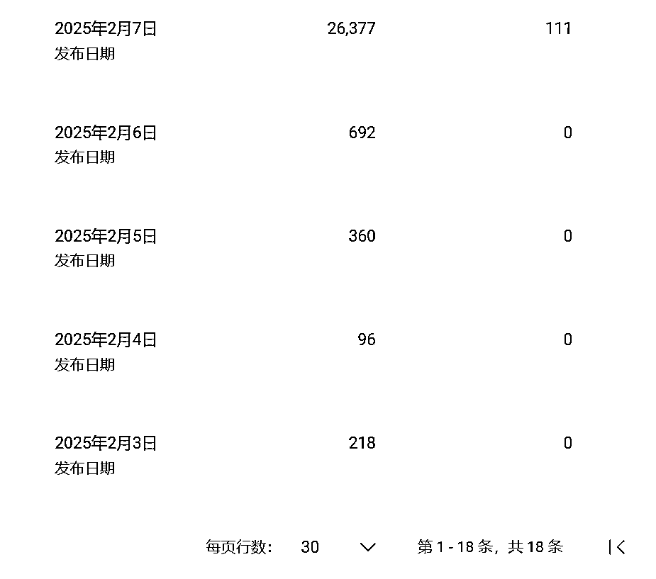
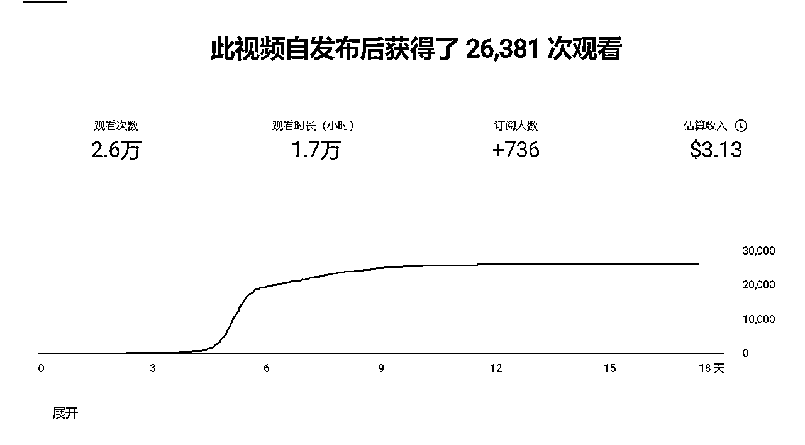
我做的长视频类型主要是讲故事的，任何故事都可以 ，这里先放两个例子。
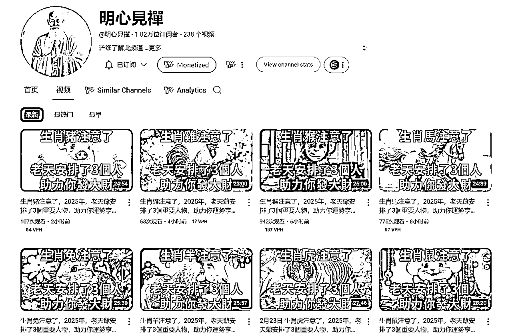
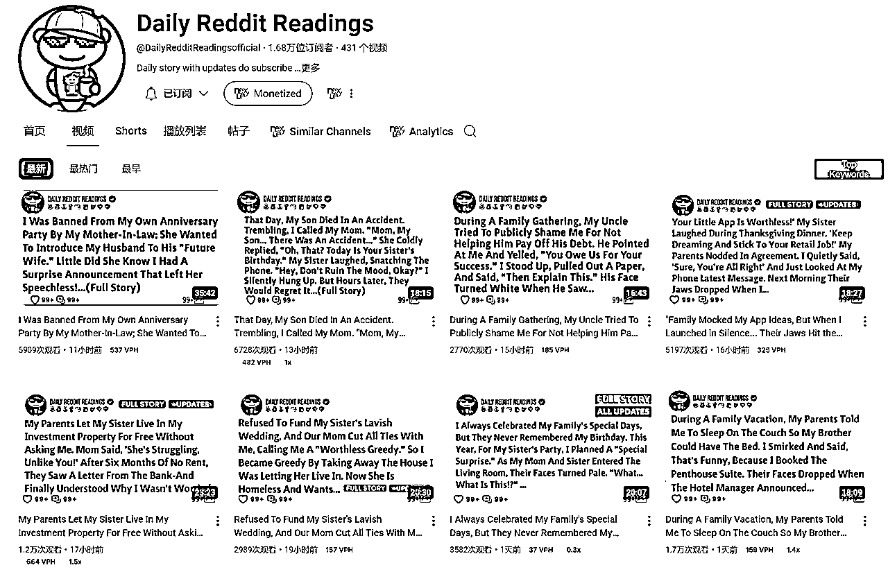
据我了解youtube英文长视频千播一般3-9刀，中文千播2-5刀，AI类型的shorts千播是0.03-0.06刀，差不多是100倍
一万播放的长视频等于一百万播放的shorts收益，但一万播的长视频要比一百万播的短视频更常见一些，并且AIshorts有个问题是题材周期较短，容易过时，你需要更频繁的调整工作流（更适合有创意的人），而故事类型的长视频账号周期要更久，并且老美们很喜欢听故事，所以你的观众更容易跑到单价高的美区。
假如我设千播平均4刀，如果我一个月弄到100万播放，就可以收益2万9人民币（下面附图AI拆解表格）
拆解到每天需要3万3播放，一个号一天3000播放，需要11个号，大家认为一个月搞100万播放的要求高吗，看完文章认为不难且收益符合你要求的就可以入场做账号了。
这里我以4刀的价格和一个号一天3000播放的要求简单测算（不高也不低，可以低估收益，但不要高估收益），仅供参考，大家可以根据自己的调研重新估算收益，正常你号多了还会存在会员和超级感谢的收益，会比我的测算更容易达到一些。
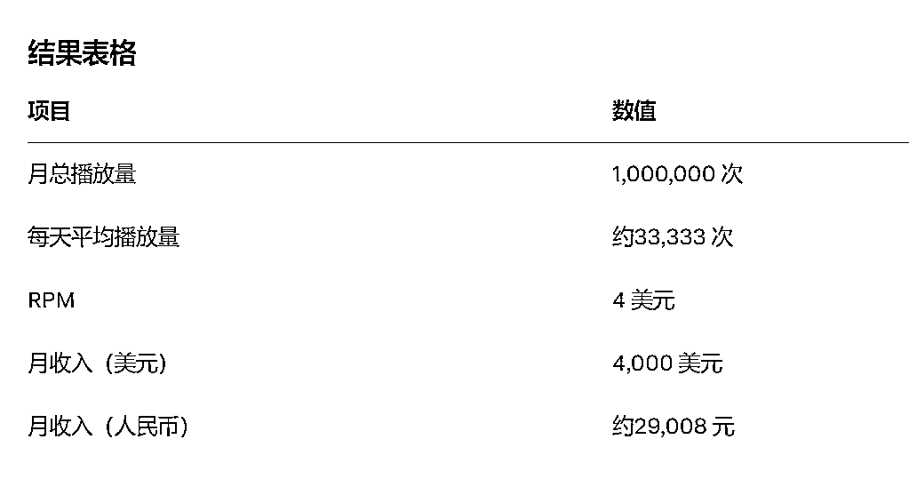
从我的收益思路推出我的视频必须要可以量产，轻松复制，一天才能做出10个20个视频，所以围绕我这个目标开始搭建工作流
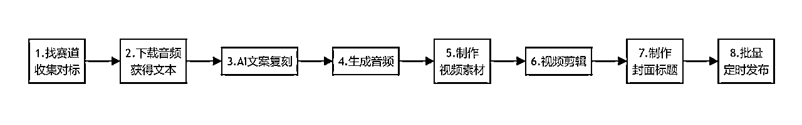
找对标是最关键的一步，要多花一些时间，对标找的不好，后面做的再好也很难爆，而长视频的制作流程比较长，所以更应该找好对标。
我找赛道的方式就是搜索，你想到任何关键词，看到任何关键词，都放到油管搜索栏里去搜，然后根据搜出来的标题结果你再裂变搜索，搜多了就会发现很多你没想到过的赛道，关键是要把突然想到的词都去搜一遍，
这里不建议上工具，要培养初期网感，我刚过ypp的账号也是这样搜出来的，轻易想到的赛道都是内卷的赛道（例如小说推文），油管的调性跟国内是有区别的，例如打鸡血讲自我成长的赛道在油管就不怎么样
一个合格的对标要求：
1.最近三个月起的账号，即最老的视频是三个月内发布的
2.平均播放有5千以上
3.视频内容可标准化
注意点：
要分账号寻找对标，当一个账号刷出一个对标类型了，就不要用来搜索其他对标了，因为多对标会混乱你的推荐系统，不方便你隔一段时间回来继续跟踪这个对标类型的发展情况，
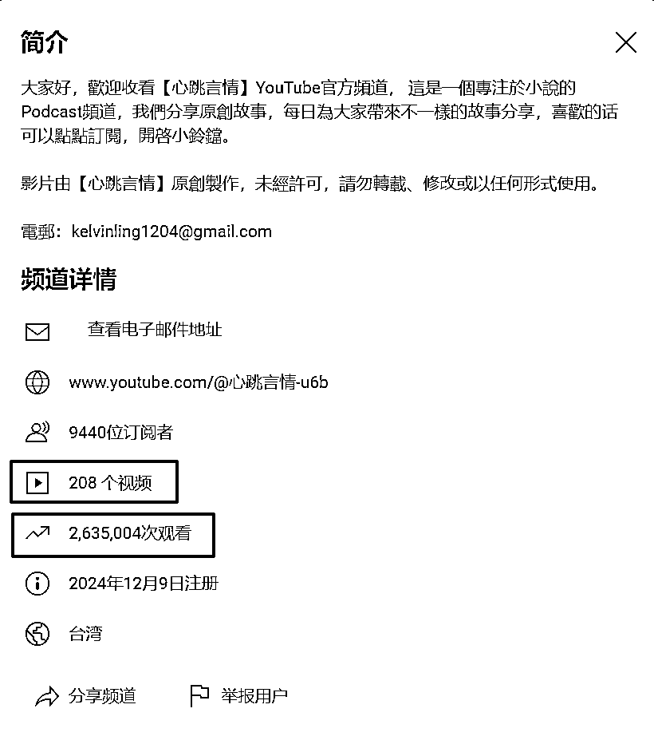
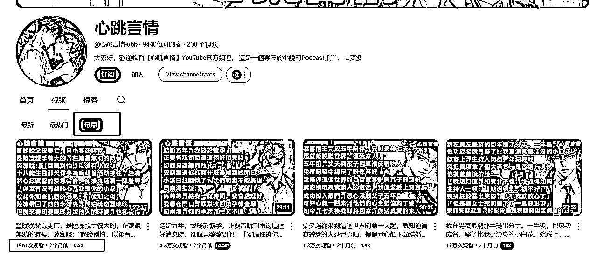
收集够对标名称之后就可以利用脚本收集账号数据
这是改自老马提供的api抓数据脚本
先收集账号整体数据(总观看数，订阅数，视频数)
隔月重跑，通过前后对照可以发现对标赛道是上坡路还是下坡路（这个数据比感觉更可靠）
由于api每天抓取有数量限制，我另外写一个脚本抓取对标全部视频（要配合比特流浪器使用）
包括标题，播放量，链接，发布时间，发布天数等数据，方便筛选获得你要复刻的爆款视频
一般一次同时制作二十个或者十个，所以至少筛出20个爆款视频，因为数量太低存在偶然
可以用马哥提供的crtubeget或者亨亨猫等工具批量下载音频，不要下载视频，浪费流量并且时间长，
也不直接下载字幕，因为有些中文视频不存在字幕，抓不到字幕
通过Videosrt Pro进行批量音频转字幕，中文使用funasr模型，英文使用whisper,获得字幕后就可以进行文案复刻
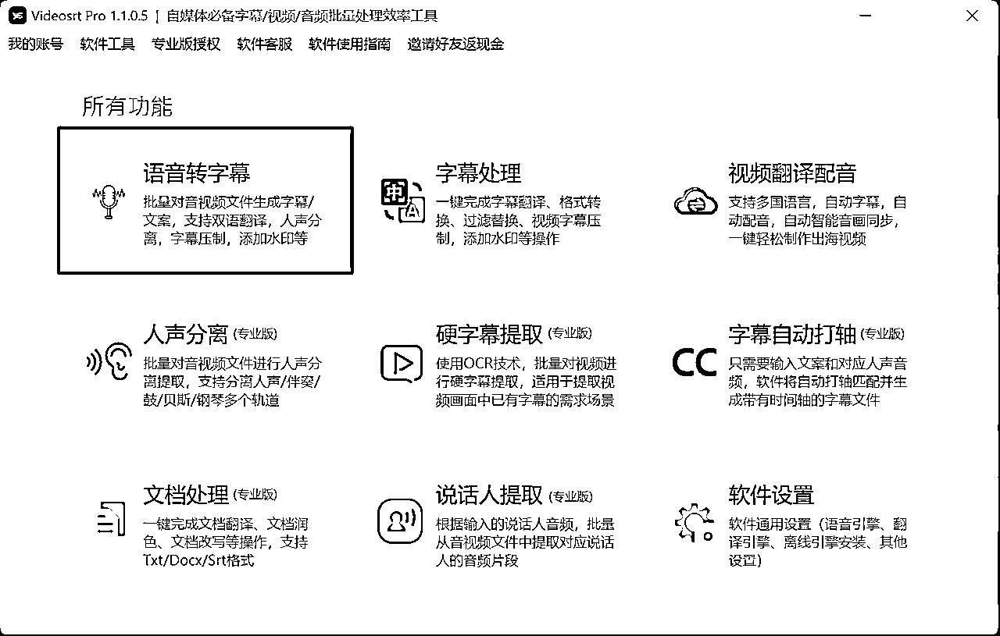
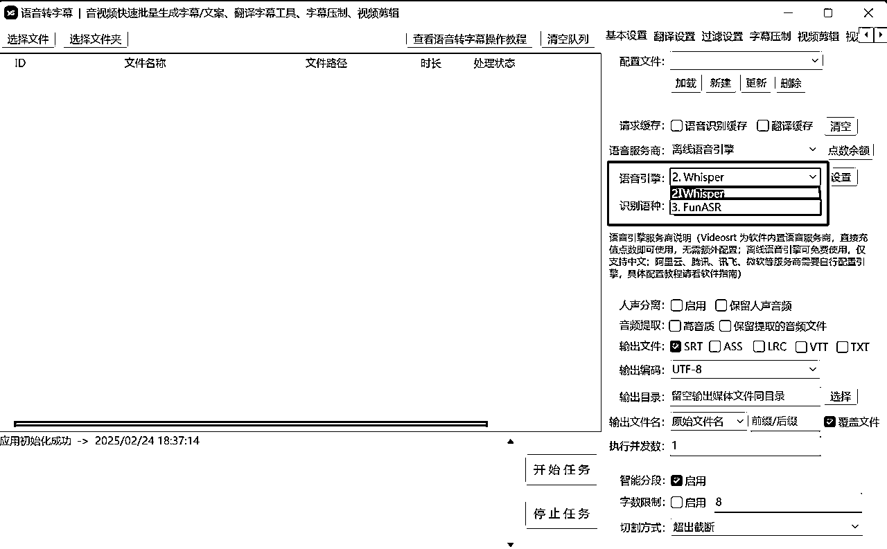
下面的脚本可以批量字幕变成纯文本格式，去掉时间轴，方便交给AI进行文案复刻
最近大模型更新的特别快，从十一月用Gtp,Claude，到年前用Deepseek（免费）和gemini（部分免费），再到二月底Grok3发布，Grok3不仅免费（做youtube的都有很多谷歌账号，一个限制了换一个就好了）还速度快、还很强，我推荐大家使用Grok3和Claude搭配使用，大家都可以尝试一下。
文案复刻这块可以参考其他圈友分享的精华帖，例如ai创作小说的方式，先提炼大纲，再进行扩写的方式，然后根据根据具体赛道进行提示词调整，如果圈友一直调试不满意的时候不要太高追求，下一轮大模型更新会自动帮我们解决这个问题，先跑通整个流程
我使用的是微软的TTShttps://speech.microsoft.com/portal
可以使用信用卡注册，每月有50万字符的免费额度，咸鱼也有大额度字符的账号可以购买（谨慎分辨，找有售后的，经常过几天会封号），可以在官网使用，也可以通过api接入
也可以使用Mircrosoft Cliphchamp软件来配音，这个是免费的。（图片左边官网，右边Cliphchamp）
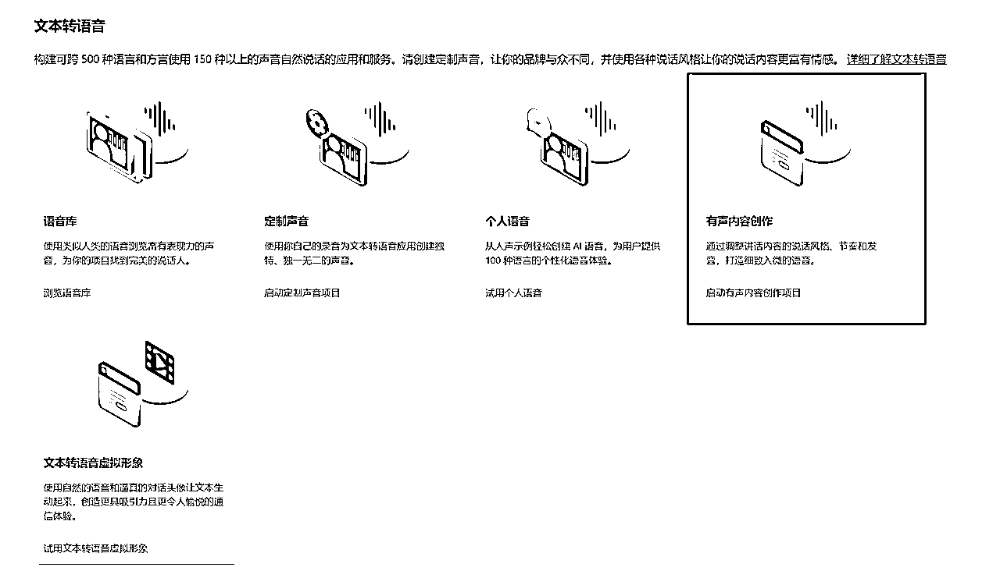
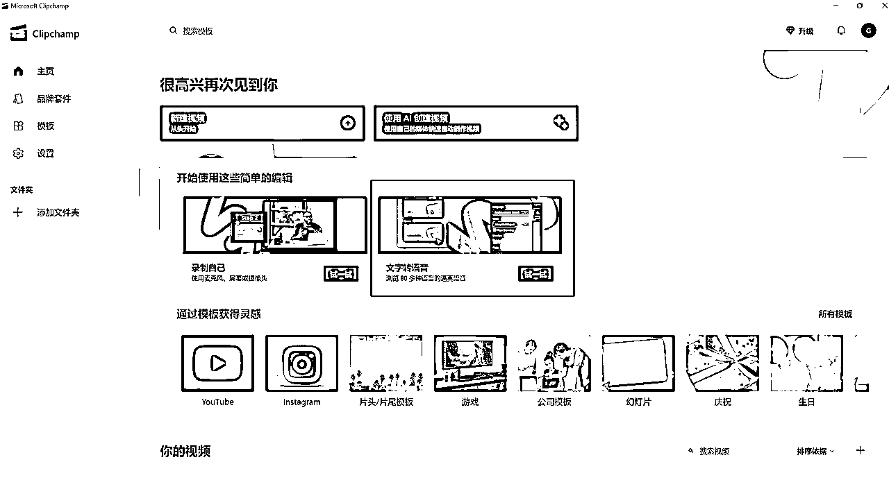
生成音频之后有些软件同时会生成srt文件，这样后期就不需要用到剪映的字幕识别。
长视频的字幕识别很花费时间并且存在错别字，我们是有原文案的，如果没有同时生成srt文件，可以使用字幕自动打轴生成srt文件，提高效率。
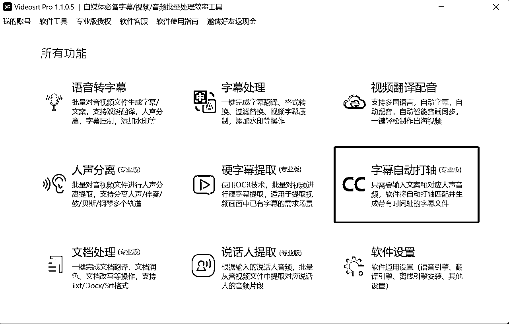
现在油管讲故事的很多都是一张图或者几十张图的PPT系列，只要截取他的图片，利用midjourney反推提示词+垫图调整，基本就能复刻 。
空镜头也能使用智谱清影这种便宜的ai生成视频工具去批量生产属于自己空镜头，
1.先使用chatgtp帮助你生产大量的空镜头提示词，可以参考我的提示词，重复丢给chatgtp。
2.利用midjourney+autojourney(一个插件)，他就会帮你自己生成并且分割下载图片
3.再把所有图片交给智普清影生成空镜头即可。
一张图系列参考
https://www.youtube.com/watch?v=BPMm1oDFHbM
多张图PPT系列参考
https://www.youtube.com/watch?v=oz3psbsRQXk
空镜头系列参考
https://www.youtube.com/@%E6%98%8E%E5%BF%83%E8%A6%8B%E7%A6%AA/videos
1.拖进音频（注意顺序，文件名可以按1,2,3递增取名，方便检查）
2.拖进视频或图片
3.拖进字幕
4.导出
一张图系列直接拖进去就可以了。
多张图PPT系列（类似抖音小说推文）在把图片拖进轨道之后可以使用https://keyframeai.top/一键关键帧工具自动帮你打好关键帧，制成ppt形式。
再打一次关键帧以后，可以一直使用这个草稿，采用替换图片的方式，这样会更方便，不用每次重复打关键帧。
注意点
剪映的设置-全局设置-剪辑 这里可以调整单张图片的默认持续时长，让你拖进轨道就不用再调整时长，提高效率
重复的操作多使用复制属性，也更加便捷
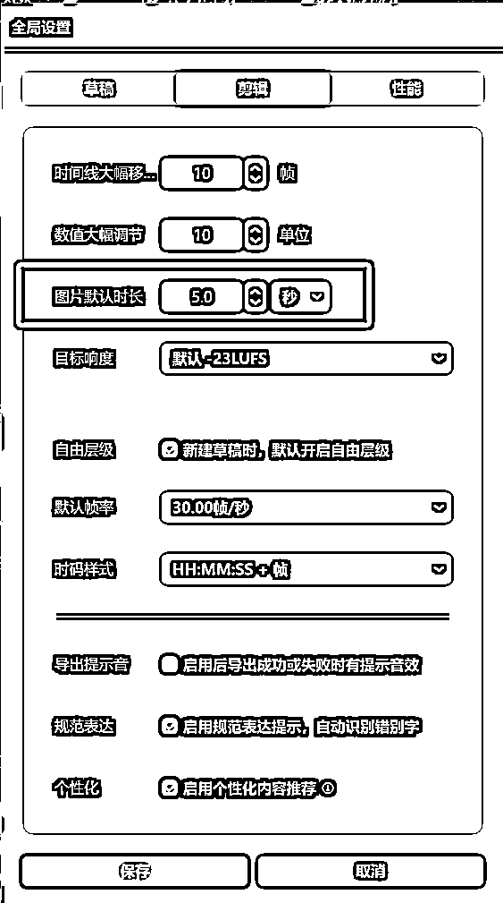
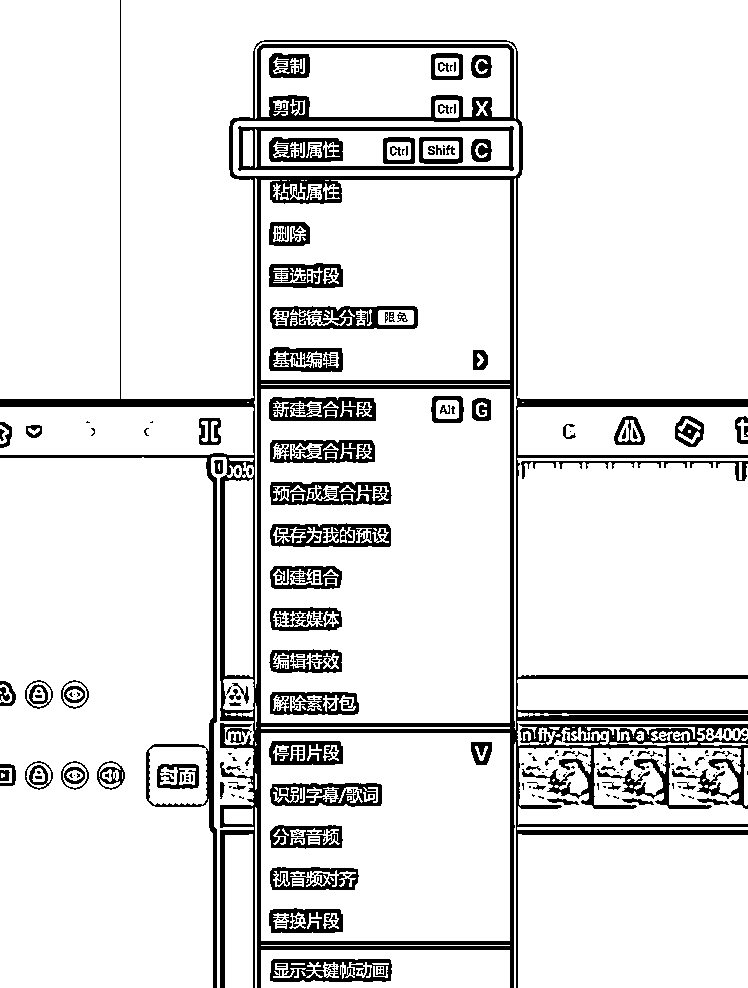
赛道跑通，模版固定之后可以使用影刀自动化
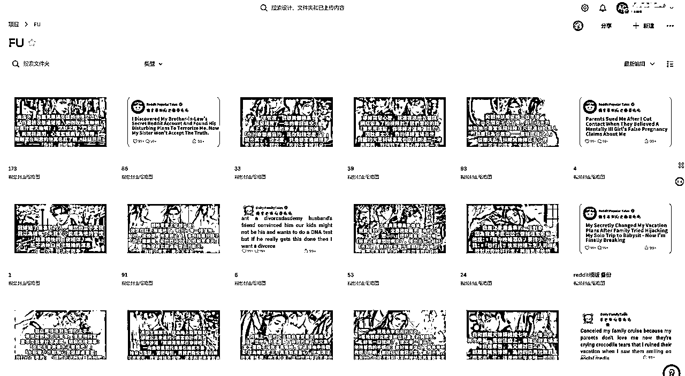
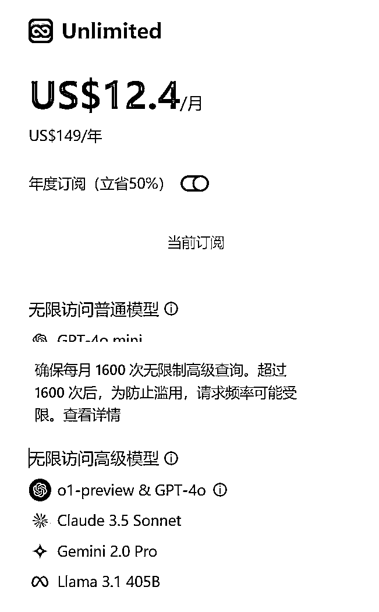
标题和封面的文案
1.同时把文案发给chatgpt，claude，grok3分别帮我生成。
2.把三个答案拼在一起，发给他们让他们投票，得票2个的我就使用那个。
根据经验一般都是claude的更优秀一点，（因为我是monica会员，我才这样操作，某些使用场景会比单独订阅gtp或者claude更有性价比，也不会限制使用次数，11月用claude网页版经常出现不够用，但monical的无限制次数上下文是比较短的，不适合多次的长文交流）
canva制作封面
最开始直接使用剪映，一样2M的大小，我发现不够清晰，然后改成使用canva,他有一个好处是可以直接扩图，这样更方便调整布局，并且网页端的工具更容易实现自动化
新号的长视频有时候流量来的比较慢，例如这个视频发布第5天了，才开始给了一点流量
所以先制作十个二十视频让他日更，隔几天再看一下数据，不着急
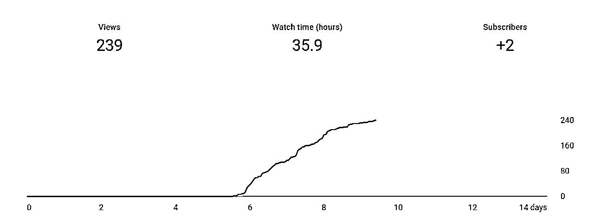
按这个工作流一天就能比较轻松的高产视频，欢迎大家对我工作流提出改善意见，交流youtube！
长视频新号遇到最多的问题就是0播，我问过很多朋友都遇到这个问题，有的怀疑IP，有的怀疑赛道，有的说最近新人太多，谷歌限制新号。
三个月我做了十几个账号，也大半都是0播，于是我就自己学习搭vps买IP，再买家宽IP，再买老账号，一个赛道一次起三个账号，尽量做好可控因素，不可控的就等我的风水了，于是终于等来了新号半个月过ypp。
感谢@七天老师、 、 对文章给予的指导!
最后以两句话结尾，共勉大家。
为之，则难者亦易矣。
不为，则易者亦难矣。